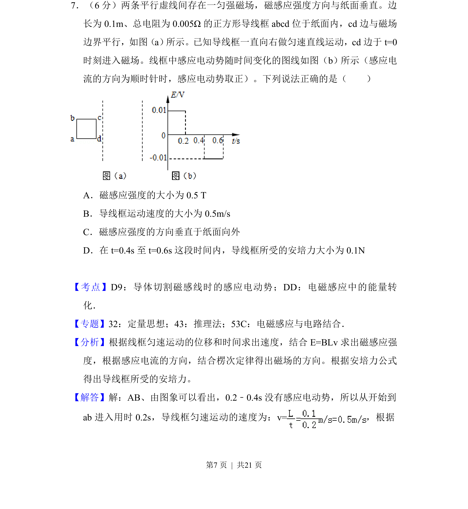
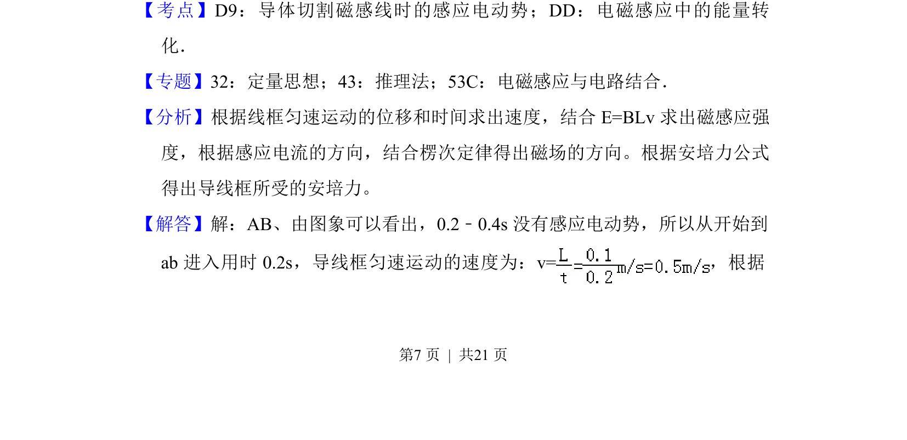
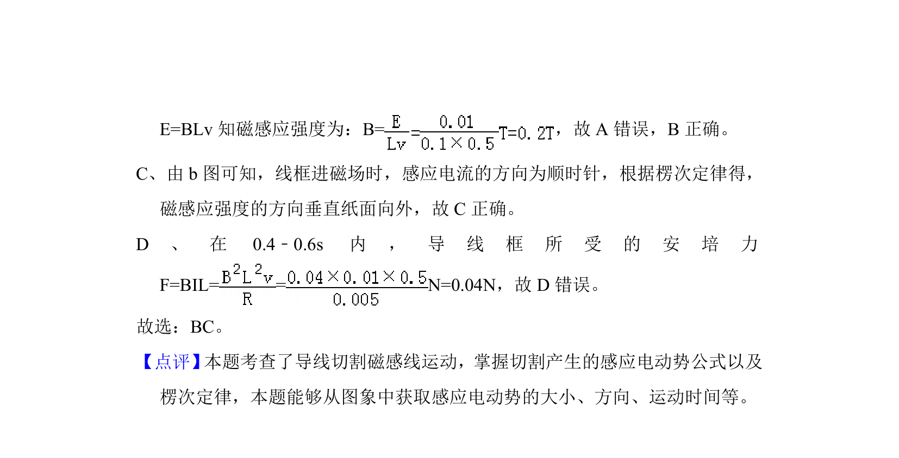

考点：电磁感应 法拉第电磁感应定律 安培力 磁场

矩形线框在匀强磁场中匀速运动，给定EMF-时间图像，判断磁场方向、导线速度及安培力大小。


📄 原 PDF 第 7 页：
素材/真题/吉林/2008-2024·（吉林）物理高考真题/2017年高考物理试卷（新课标Ⅱ）（解析卷）.pdf
7．（6分）两条平行虚线间存在一匀强磁场，磁感应强度方向与纸面垂直。边 长为0.1m、总电阻为0.005Ω的正方形导线框abcd位于纸面内，cd边与磁场 边界平行，如图（a） 所示。已知导线框一直向右做匀速直线运动，cd边于t=0 时刻进入磁场。线框中感应电动势随时间变化的图线如图（b）所示（感应电 流的方向为顺时针时，感应电动势取正）。下列说法正确的是（ ） A．磁感应强度的大小为0.5 T B．导线框运动速度的大小为0.5m/s C．磁感应强度的方向垂直于纸面向外 D．在t=0.4s至t=0.6s这段时间内，导线框所受的安培力大小为0.1N
【考点】D9：导体切割磁感线时的感应电动势；DD：电磁感应中的能量转 化．菁优网版权所有 【专题】32：定量思想；43：推理法；53C：电磁感应与电路结合． 【分析】根据线框匀速运动的位移和时间求出速度，结合E=BLv求出磁感应强 度，根据感应电流的方向，结合楞次定律得出磁场的方向。根据安培力公式 得出导线框所受的安培力。 【解答】解：AB、由图象可以看出，0.2﹣0.4s没有感应电动势，所以从开始到 ab进入用时0.2s，导线框匀速运动的速度为：v=，根据